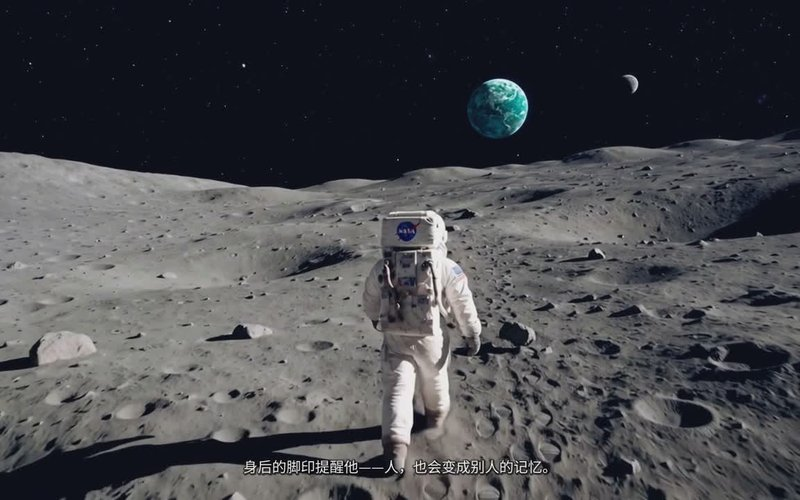
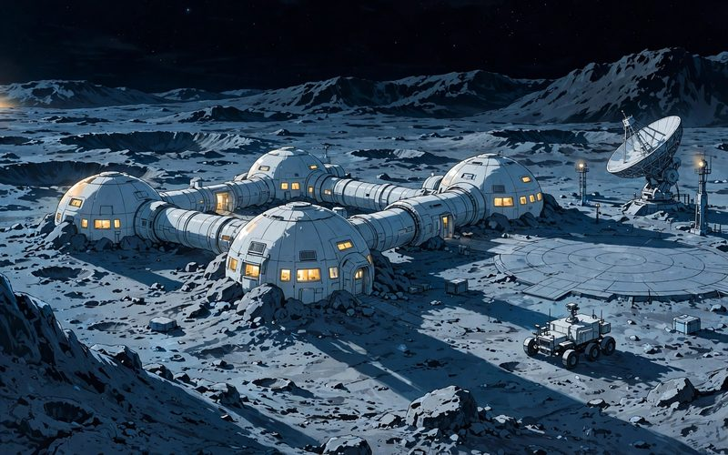
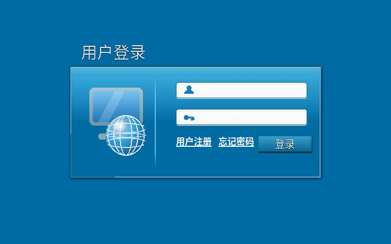

《回望》——宇航员主题 AI 短片
94 秒短片：宇航员重返月球，寻找十年前留在月面的一句话，最后发现答案一直在面罩的倒映里。
视听语言 · AI 短片我是山东女子学院数字媒体技术（专升本）2601 班的学生，学号 260956030112。学习方向是视听语言与影像创作、AI 视频生成（ComfyUI）、三维建模（3ds Max）和 Web 前端开发，正在把课堂作业一件件做成拿得出手的作品。
兴趣爱好：看电影、追现场演出、科幻与宇航员题材，课余时间喜欢健身和弹吉他。
每一件，都是课堂作业长成的作品。

94 秒短片：宇航员重返月球，寻找十年前留在月面的一句话，最后发现答案一直在面罩的倒映里。
视听语言 · AI 短片
延展《回望》世界观的科幻漫剧。2046 年，宇航员林望重返月球，执行航天遗存回收任务，循着清单上的坐标，寻找十年前失踪的沈月遥。
漫剧 · 科幻30 秒短片作业：推、拉、摇、移四种运动镜头，讲述主角林晚清晨 6 点 48 分走进图书馆的故事。
视听语言 · 运动镜头
UI 设计课作业：严格按教材步骤制作的登录对话框 PSD，分图层可编辑，450×200 对话框，圆角输入框与渐变按钮。
UI 设计 · Photoshop3ds Max 建模练习：表身、刻度与数字用参数化建模搭建，铁艺卷涡装饰手工调整，练的是结构化建模与分件思路。
三维建模 · 3ds Max有合作想法，或者单纯打个招呼，都可以。